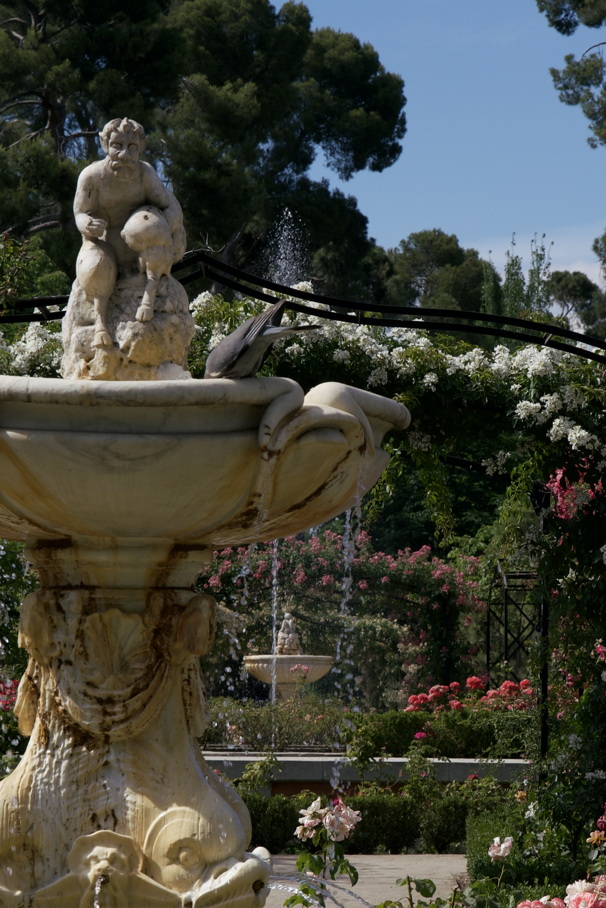
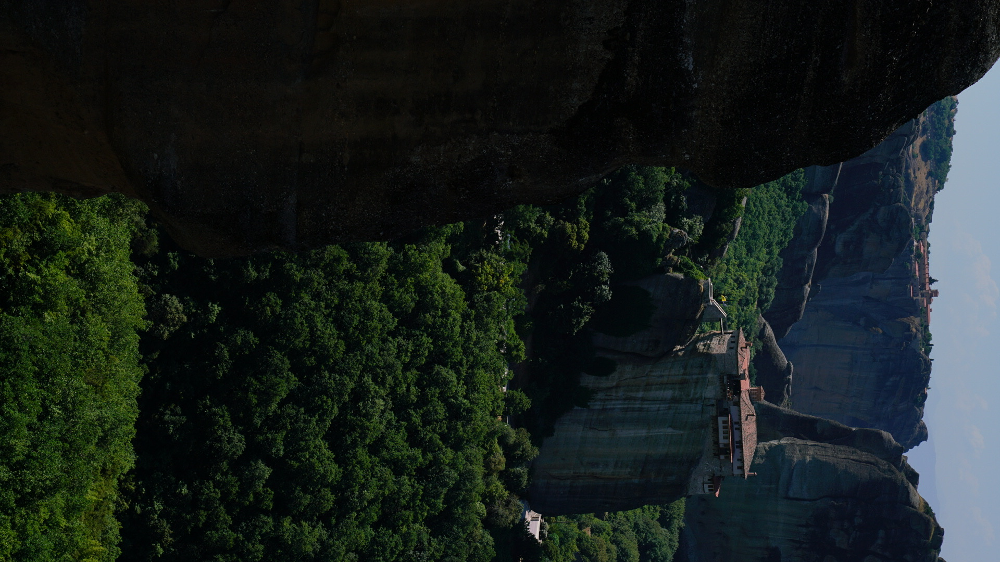
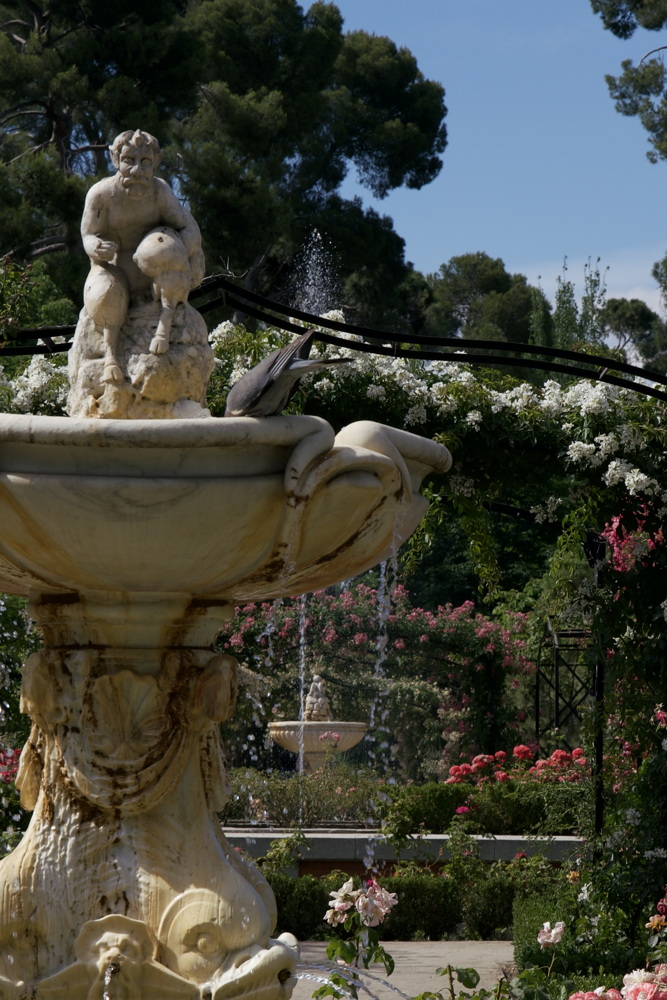
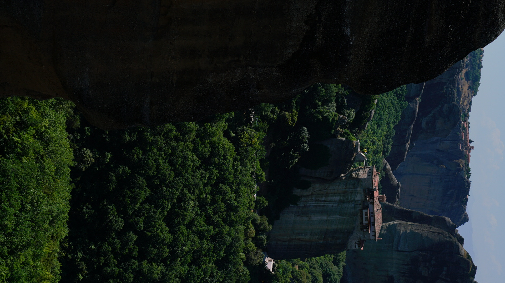
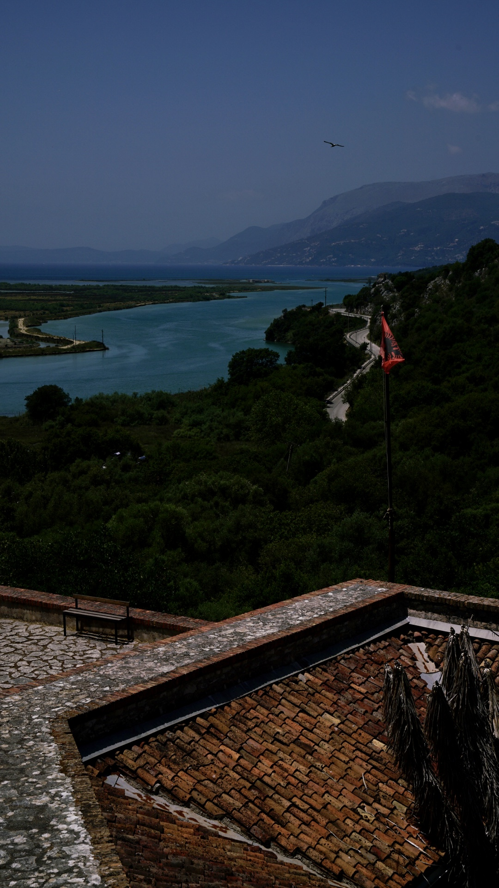
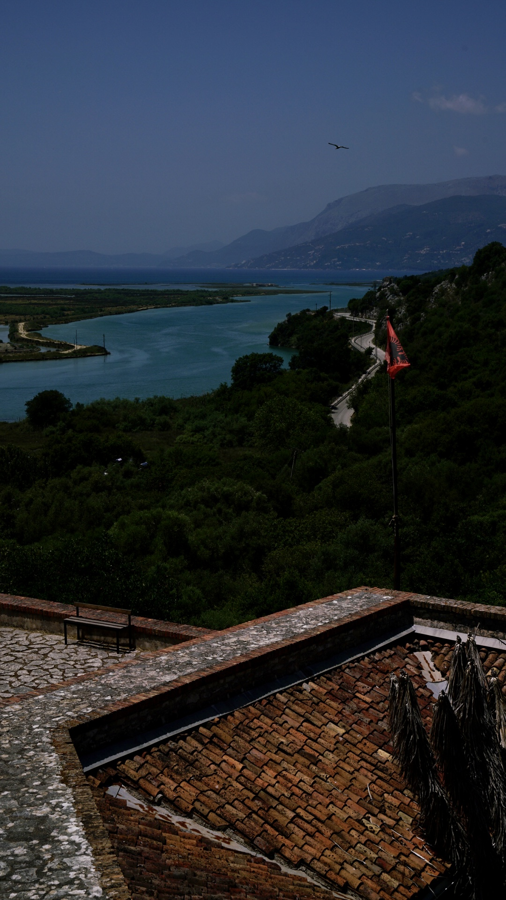

 



These images are taken in Hungary, Spain, Greece, Austria, Albania and Egypt.
They were taken by Sony a7rii with GM 24-70 lens.
"Fun" fact, only seven days after I bought the GM I lens, the GM II came out.
The two images on the top are Fisherman's Bastion in Budapest. Fisherman’s Bastion in Budapest is one of the top Budapest attractions without a doubt.
The present day lovely lookout towers and decorative fortification of Fisherman’s Bastion were built in the 19th century to serve as a lookout tower for the best panoramic views.
Needless to say, there used to be real castle walls where now you can take fantastic photos from, but the present day structure has never served as an actual fortification in Buda.
The fountain was where Sound of the Music shot scenes of Maria taking the kids out.
The Seville Cathedral photo was taken in on a Friday afternoon,
I learned that Seville people tend to take Thursday and Friday afternoons off.
I had to get up before 4am to head to Abu Simbel because it can get really hot during the day.
Abu Simbel was excavated from the middle of the dessert in the southern-most tip of Egypt. It directly borders Sudan -- I remember there was a quite narrow river separating Abu Simbel and Sudan, the river sparkled in hues of sapphire blue under the scorching sun.